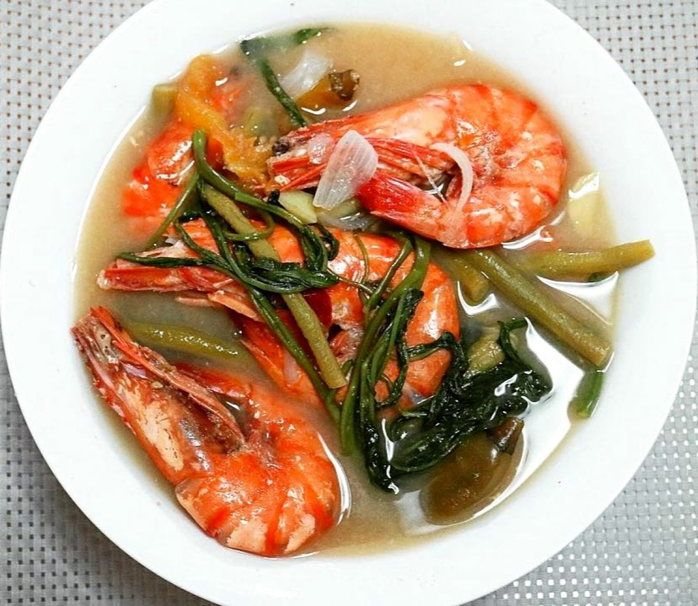

Sinigang

Description
Sinigang na Hipon is a type of Filipino sour soup, wherein shrimp is used as the main ingredient. This dish also includes a variety of vegetables such as daikon radish, snake beans, okra, and eggplant. This dish is best served during cold weather. It is best enjoyed hot with a cup of white rice.
Ingredients
- 1 lb. shrimp cleaned
- 44 grams Knorr Sinigang sa Sampaloc Mix
- 1 bunch kangkong
- 15 pieces snake beans
- 5 pieces okra
- 1 piece eggplant
- 1 cup daikon radish sliced
- 1 piece tomato sliced
- 3 pieces long green pepper
- 1 piece onion
- 2 quarts water
- Fish sauce and ground black pepper to taste
Steps
- Boil water in a cooking pot. Add onion, tomato, and radish. Cover and continue to boil for 8 minutes.
- Add shrimp. Cook for 1 minute.
- Add Knorr Sinigang sa Sampaloc Recipe Mix. Stir until it dilutes completely. Cover and cook for 3 minutes.
- Add long green pepper, snake beans, okra, and eggplant. Stir. Cook for 5 minutes.
- Put the kangkong stalks into the pot. Season with fish salt and ground black pepper.
- Add kangkong leaves. Cook for 1 minute.
- Transfer to a serving bowl. Serve warm with rice.